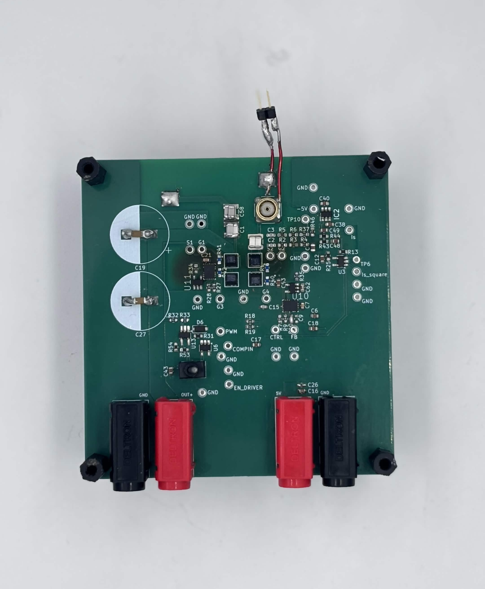
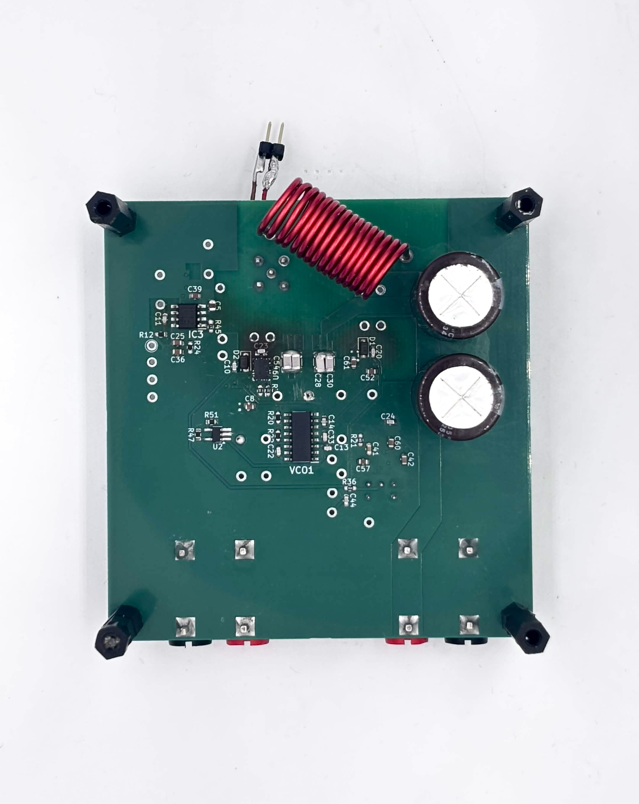
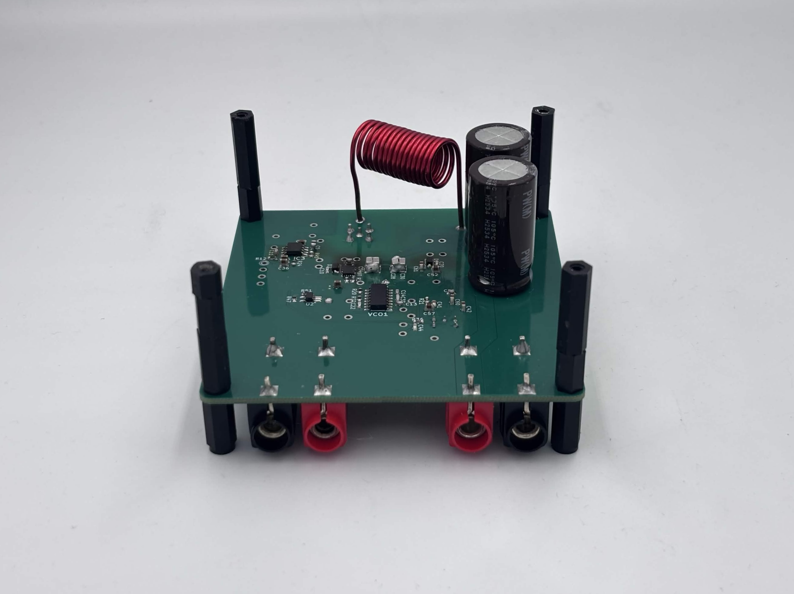
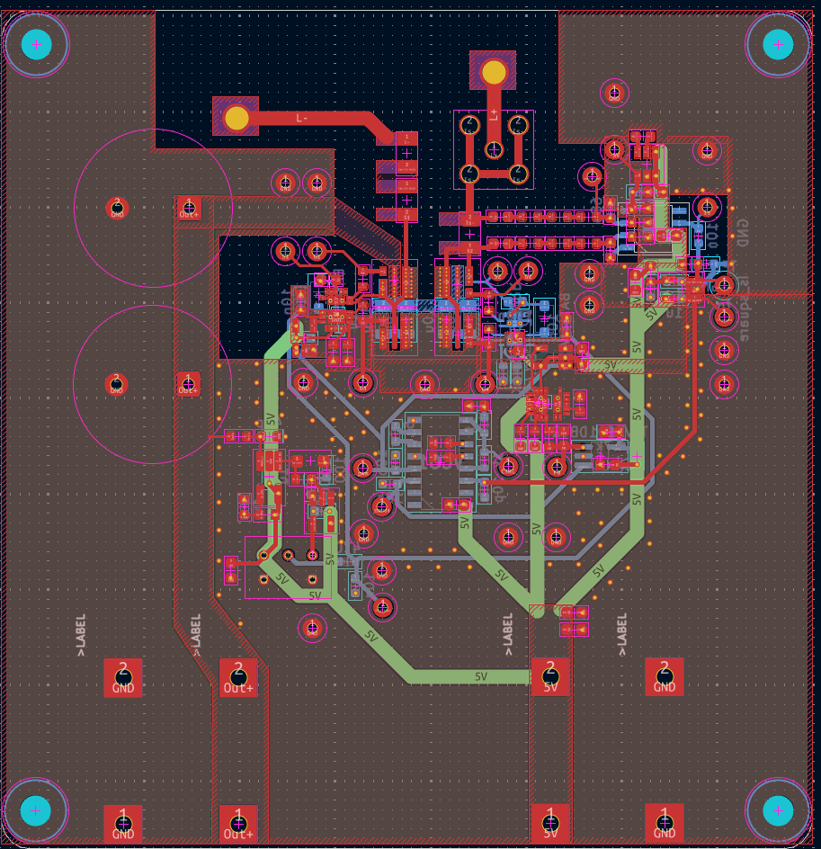
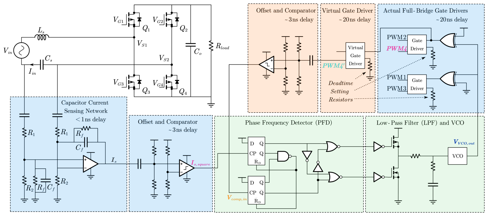
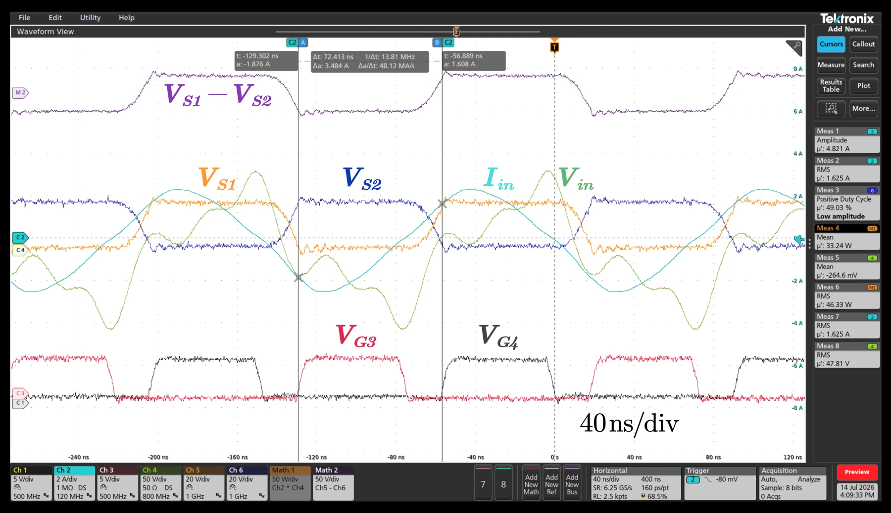
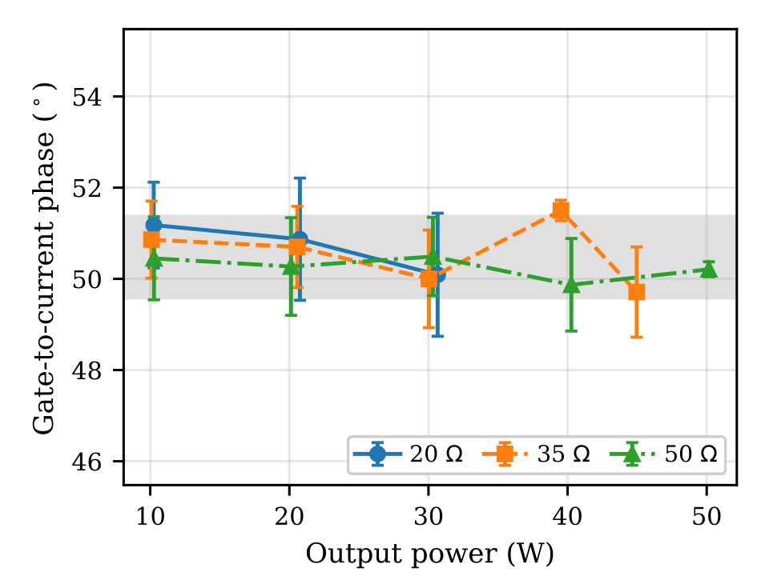
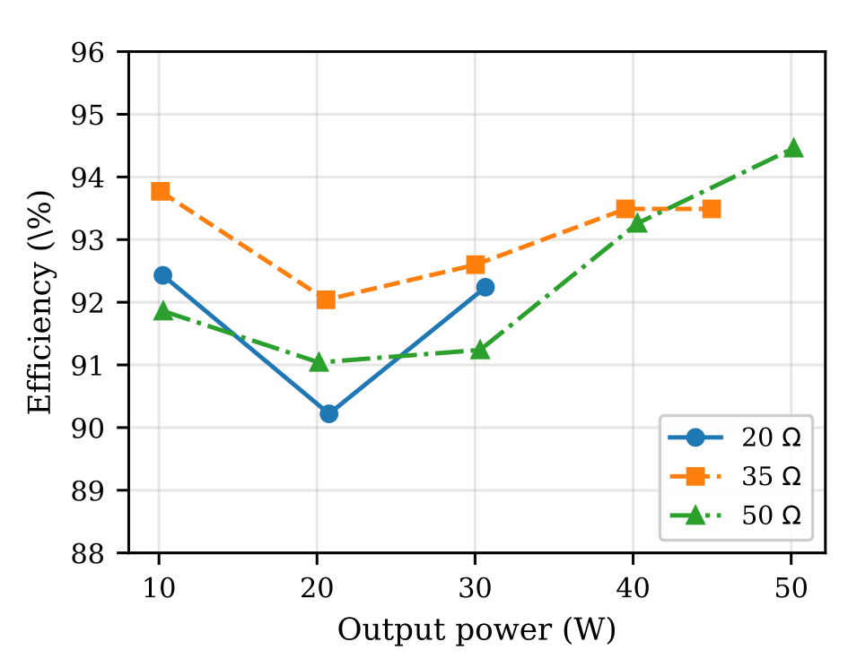

PLL-based synchronous rectifier
PLL-based synchronous rectifier for 6.78 and 13.56 MHz wireless power transfer. Modeling, schematic capture, hand assembly, and testing with my PhD mentor. Bench tuning brought efficiency from about 20% to 94%.
A PLL keeps the rectifier’s switching synchronized with the incoming AC current. A matched feedback path compensates for signal-chain delays, while a controlled timing offset lets the switches turn on at zero voltage to reduce switching losses.
At 6.78 MHz, gate-to-current phase alignment stayed within ±0.89° (±0.37 ns) across 10–50 W and 20–50 Ω loads without operating-point retuning.









